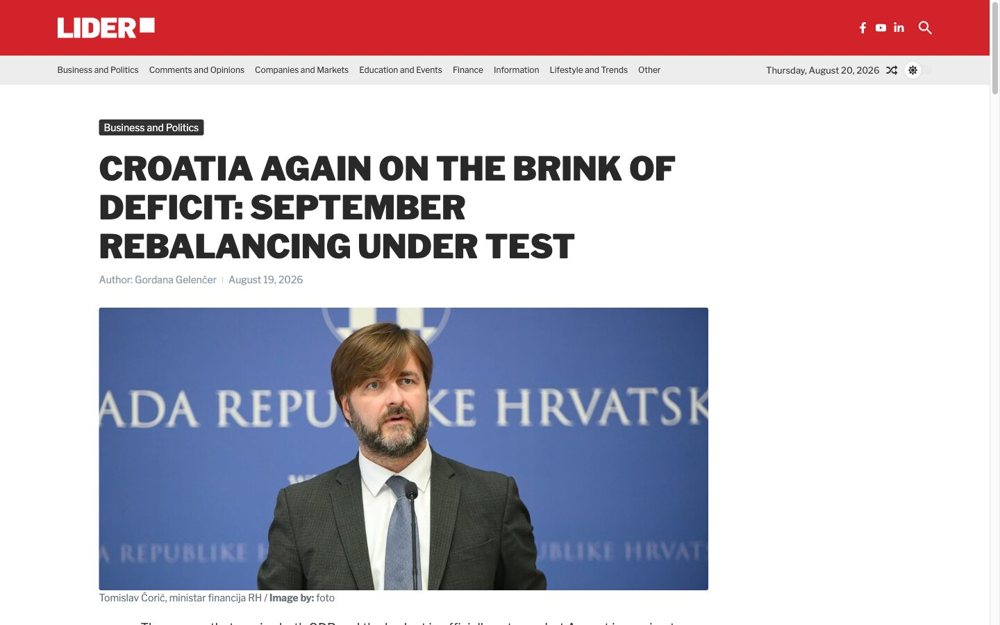
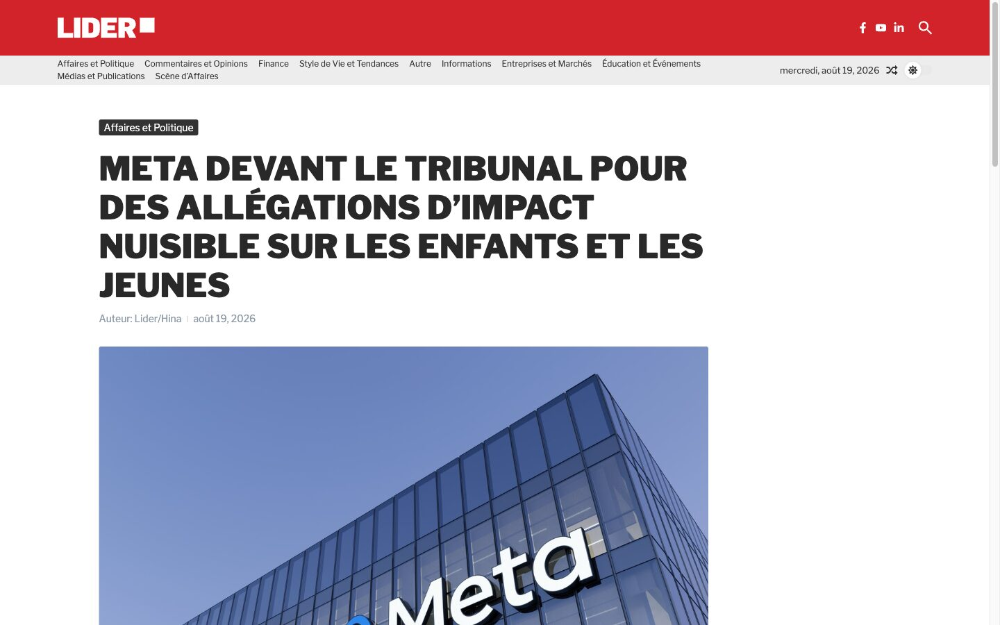
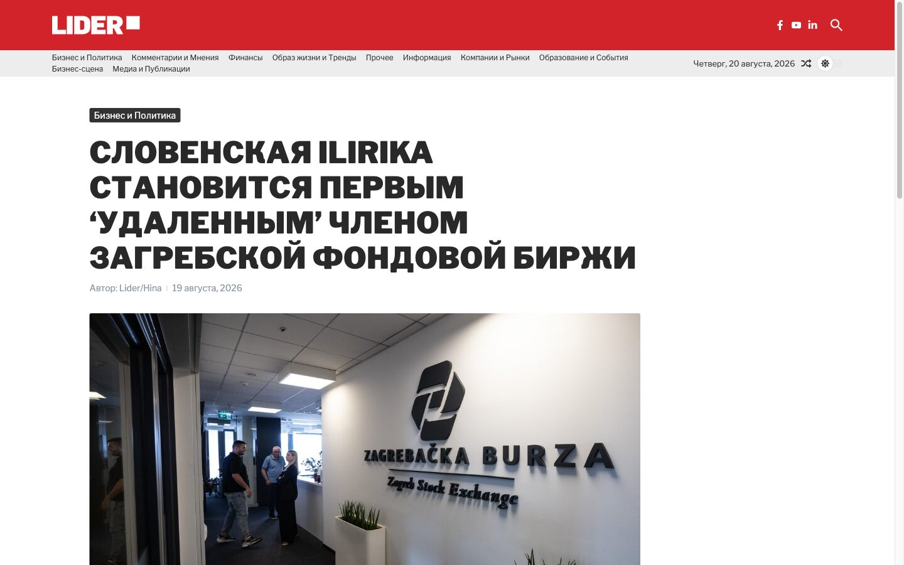
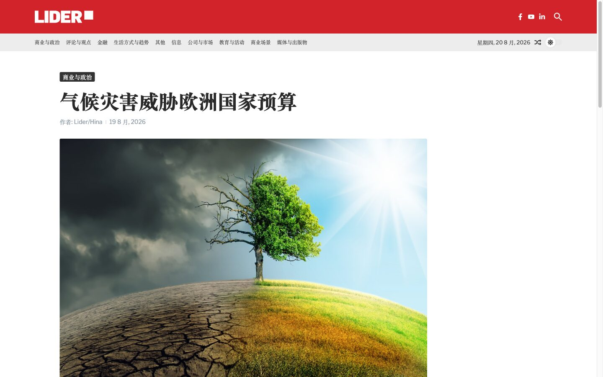

One Croatian newsroom, translated into ten languages and published as ten more live news sites - around 1.4 million articles in all, kept current every day by a pipeline that runs itself.




Lider publishes Croatian business news. The job was to make that same journalism readable to the rest of the world - not a handful of hand-picked pieces, but the whole archive, every day, in ten languages, each on its own real news site.
Translating Croatian straight into ten languages means ten independent, expensive paths - and for a smaller source language the quality wobbles most on the rarer pairs. Getting Croatian to Japanese well is harder, and costs more, than getting English to Japanese.
So English does the heavy lifting in the middle. Croatian is translated once into clean English, and every other language is translated from that. One good pivot instead of ten brittle ones - better output, a fraction of the cost.
Every article runs the same path from the source database to ten live sites. English carries the load in the middle, and the whole thing runs on a schedule.
New Croatian articles are read straight from Lider's database - web stories every day, the full print-and-web archive for the initial backfill - ordered newest first.
A fast, low-cost model translates each article into English first - title, subhead, body HTML, tags and category - validated against the same schema the database is shaped by.
From that clean English, the same model fans out to German, French, Italian, Spanish, Russian, Turkish, Chinese, Japanese and Hungarian - one strong pivot instead of nine brittle direct pairs.
Author line, publish date, featured image and caption travel with the text. Category names map through a per-language dictionary, so taxonomy is translated consistently, never invented.
A batch WordPress API pushes finished articles to each language's site - tens to hundreds a minute - with images and categories in place. Correcting tags alone re-runs 10-20x cheaper than a full retranslation.
A daily job translates the day's new stories, syncs all ten sites, clears caches and reports back - throttled to match the newsroom's real publishing rate so it never burns tokens on noise.
Volume like this only works if each article costs almost nothing. A fast, low-cost model; one English pivot instead of ten direct paths; tag-only re-runs for small fixes; and a batch publish API instead of one-at-a-time posting - together they turn "translate a whole newsroom into ten languages, forever" from a budget line into a background process.
Each language is a full, standalone news site - not a language switch on a single install. They share the pipeline and the design, and stay isolated everywhere it counts.
Every language runs its own WordPress on its own subdomain, with the Croatian source at hr.lider.media. Separate installs mean one site's problem never becomes another's.
Design lives in one place. The English instance is the master template; a change there is pushed to all nine other language sites at once, so ten sites never drift into ten slightly different designs.
Images aren't re-uploaded ten times. A small dedicated media service stores each article's imagery once and serves it to every language site behind nginx - so a photo published in Croatian shows up identically in Japanese, with none of the duplication.
Every site is server-rendered WordPress with its own sitemaps, analytics and Search Console - real pages a search engine can index in each language, not a client-side translation widget bolted onto one site.
Every number here is a live post count, pulled from each site today. The Croatian source feeds all ten - and because the translated sites carry Lider's full print back-catalogue too, each one runs even more articles than the live Croatian web mirror.
Lider Translations turns one newsroom's daily output into ten more live sites, automatically. If you publish content that deserves a wider audience - news, catalogues, documentation - that's the kind of pipeline we build.
We're fully booked for new custom builds and embedded roles right now — say hello at tihomir.jauk@lumiverse.hr and we'll reach out when we reopen. Want to use one of our products — Tvrtko.ai, Moj Kolega, Titlomat and more? Those are open — get in touch and we'll help you get started.